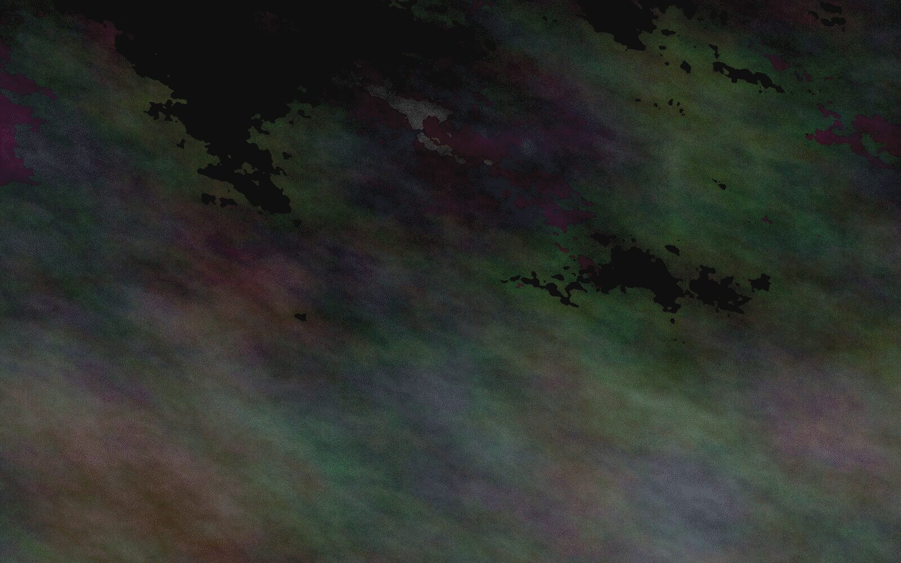

заголовок записки
Текст записки.
Where the pines are so thick the light comes down green — placeholder · строка цитаты
signal.exe
> source: telegram
> status: online_
сейчас
- слушаю
- Crystal Castles — Crimewave
- снимаю
- ФЭД-5В, плёнка 12/36
- читаю
- —


Записки на полях: одна-две фразы в духе канала, без рамки, как надпись карандашом.
что здесь собрано
- southern gothic — болота, проповеди, семейные тайны
- folk и appeal to heaven — сосна на белом, старая печать
- crystal castles, milkchan — кассетный интернет нулевых
- плёнка — ФЭД-5В, туман, горы